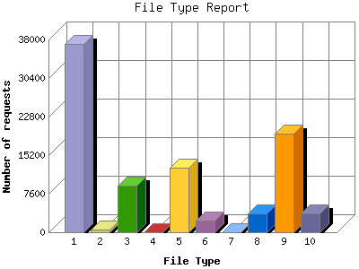

The File Type Report identifies the type of information that is requested from the web site. GIF and JPG are the two types of graphic (image) files that are most commonly supported by web browsers. HTML (sometimes abbreviated HTM), ASP, and [directories] all represent actual pages. The number of image requests will almost always outnumber page requests as one page may contain several images.
This report shows results with at least 0.100000 percent of the total bytes. This report is sorted by amount of bytes transferred.

| File Type | Number of requests | Percentage of the bytes | |
|---|---|---|---|
| 1. | .jpg [JPEG graphics] | 37,190 | 55.79% |
| 2. | .mp3 [MP3 sound files] | 615 | 15.2% |
| 3. | .htm [Hypertext Markup Language] | 9,171 | 12.10% |
| 4. | .mpeg [MPEG movie] | 53 | 5.26% |
| 5. | .JPG | 12,774 | 3.63% |
| 6. | [directories] | 2,275 | 2.80% |
| 7. | .zip [Zip archives] | 50 | 2.38% |
| 8. | .js [JavaScript code] | 3,747 | 1.51% |
| 9. | .gif [GIF graphics] | 19,380 | 1.27% |
| 10. | .css [Cascading Style Sheets] | 3,660 | 0.23% |
| [not listed: 2] | 21 | 0.3% | |
This report was generated on April 3, 2004 00:36.
Report time frame December 11, 2003 00:13 to April 2, 2004 23:56.
| Web statistics report produced by: | |
| analog 5.1 | Report Magic for Analog 2.10 |